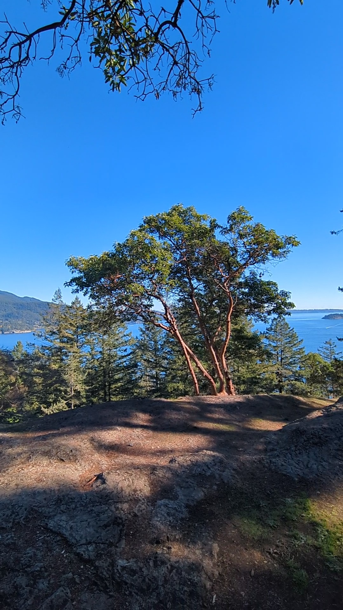
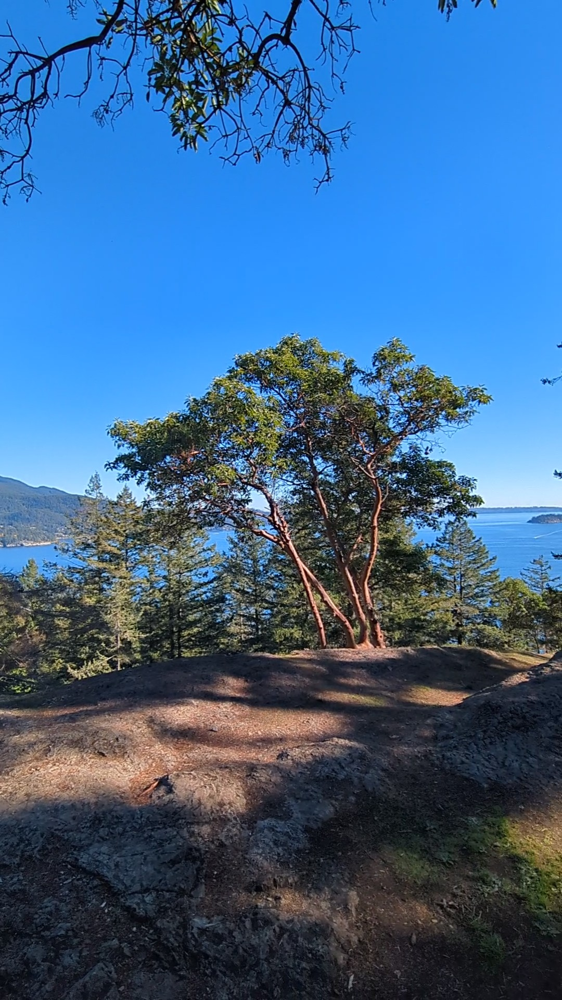

Dorman Point Trail
Completed on 07/10/2023
 X

X

2.5 km round trip, easy trail
Quick hike to get a view from Bowen Island. The trail starts next to the ferry terminal and has a couple steep sections.
Public Transit Option: To reach Bowen Island you will need to take the 257 (Vancouver Express) bus to the Horseshoe Bay Ferry Terminal. The Bowen Island Ferry will bring you next to the start of this trail.
See In Maps